Concept du jeu
Valorant est un jeu de tir tactique compétitif en vue à la première personne, développé par Riot Games.
Le jeu oppose deux équipes de cinq joueurs dans des parties où stratégie, précision et communication sont essentielles.
Chaque joueur incarne un « agent » disposant de compétences spéciales qui complètent l’usage des armes traditionnelles.
Le concept repose sur un équilibre entre adresse, tactique et utilisation intelligente des pouvoirs.
L’objectif principal : poser ou désamorcer le Spike selon le camp.
Chaque décision peut changer le cours d’une partie.
Histoire de Valorant
L’univers de Valorant se déroule dans un futur proche, après un événement appelé le First Light.
Cette énergie mystérieuse a transformé certaines personnes en Radiants, dotés de pouvoirs surnaturels.
Face à cette nouvelle ère, une organisation nommée le Protocole Valorant a été créée pour maintenir la paix.
Ce groupe, composé de Radiants et d’agents humains, lutte contre une Terre parallèle exploitant la même ressource : le Radianite.
Les différents modes de jeu
Valorant propose plusieurs modes pour s’adapter à tous les styles de joueurs.
Unrated
Le mode standard : deux équipes s’affrontent sans classement. Idéal pour s’entraîner.

Spike Rush
Des parties rapides et fun en 4 manches gagnantes, avec le même équipement pour tous.

Swiftplay
Une version plus courte du mode standard : 5 manches gagnantes pour des matchs intenses.
Team Deathmatch
Combat à mort par équipe avec réapparitions et rythme rapide. Parfait pour s’échauffer.